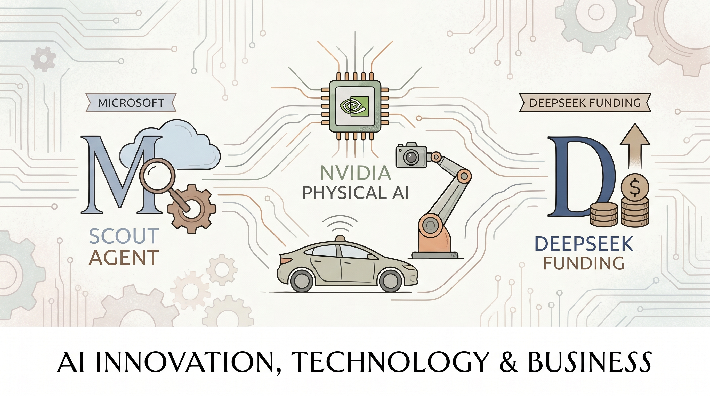

微软在Build开发者大会上发布首个内部推理模型MAI-Thinking-1（350亿参数）及基于该模型的AI代理Scout。
两克伴AIGC日报
2026-06-04 星期四

本期关注：微软推出Scout代理，自主研发推理模型 - Axios、英伟达携智能体技能赋能下一代物理AI研究，涵盖自动驾驶、机器人和视觉AI领域、据消息人士称，DeepSeek预计在首次融资中筹得70亿美元 - CNBC、GitHub 的代理计划 — Kyle Daigle，GitHub
📰 行业动态
NVIDIA在CVPR大会上发布面向自动驾驶、机器人和视觉AI的物理AI代理技能，加速物理AI研究工作流开发。
中国AI初创公司DeepSeek完成首次外部融资，融资额约74亿美元，腾讯和宁德时代参投，估值达3500-4000亿元。
🔥 今日焦点
GitHub终于公布了他们针对AI编程代理时代的完整规划。说实话，这个消息来得并不意外——Copilot点燃了AI编程的第一把火，而现在整个开发者社区对Agentic Coding的热情已经让GitHub感受到了前所未有的压力。作为全球最大的开发者平台，GitHub的每一个动作都会影响数千万开发者的日常工作。据Kyle Daigle透露，这次规划不仅仅是功能升级，而是涉及平台架构层面的重新设计，以适应AI代理带来的全新编程范式。对于我们这些每天和代码打交道的人来说，这意味着不久的将来，代码审查、Bug修复、甚至整个功能模块的开发都可能由AI代理自动完成。当然，这也会带来新的问题：当我们越来越依赖AI生成代码时，如何保持对技术本质的理解？这是整个行业都需要思考的命题。
---
Anthropic刚刚发布了Claude Opus 4.8，The Sequence在深入分析后认为"别被表面数字骗了"——这绝对不是一次常规的小版本迭代。事实上，Anthropic最近几个月的发布节奏明显加快，Claude 3.7 Sonnet、Claude 3.5 Sonnet v2相继推出，而这次Opus级别的更新很可能意味着基础模型能力又有了质的飞跃。Opus系列向来是Anthropic的旗舰产品，主要面向企业级复杂推理场景。如果The Sequence的判断准确，那么这次的改进可能涉及长上下文处理、多步骤任务规划或者新的推理优化。考虑到Anthropic一贯的低调风格，一篇专门的分析文章来"纠正认知"，本身就说明这次发布被低估了。建议关注后续的基准测试数据和技术解读。
📚 深度长文
开发者在AI工具的加持下，代码产出量在过去半年翻了一番甚至更多——但这恰恰成为了新的问题。质量下滑、可靠性降低、技术债务堆积，这些副作用并没有因为「效率提升」而消失，反而在加速累积。这篇文章提出了一个反直觉的建议：想要真正加快速度，首先得学会主动放慢。
作者的核心论断是：大多数团队在使用AI Agents时处于「被动加速」模式——不断追加需求、快速生成代码、仓促集成——却没有建立起对应的质量保障机制。这不是工具的问题，而是工作流程心智模型的问题。文章引入了「慢下来才能快」的框架，建议在AI生成代码后引入结构化的review节奏、人力checkpoint，以及对技术债务的主动清理策略。
全球医疗体系长期面临人手不足、预算紧张、需求持续增长的三重压力，而AI Agents的出现让业界开始重新思考技术在这其中的角色——不是替代医护人员，而是把他们从行政和文书负担中解放出来，重新关注「人」本身。这篇文章的核心问题是：当Agentic AI进入医疗场景，到底是让人情味消失，还是真正实现「再人性化」？
文章引用了大量实际部署案例，说明Agentic AI目前在分诊、随访、健康记录整理等环节的表现：降低了医护人员的行政负荷，让医生与患者的互动时间有了实质增加。更关键的是，作者区分了「AI替代人工」和「AI放大人工」这两种路径，指出当前真正有效的落地集中在后者。
🐦 Ta们说
> "This is really intellectually dishonest.
I have not been arguing that LLM token prices are increasing (though the all you can eat buffet is over), I have been arguing the *opposite*, viz that they will go down (e.g., in my recent tweet on commodity pricing that got 1 million views) because there is no moat, and that leaves profitability in doubt.*
> "World Labs CEO Dr. Fei-Fei Li: "The world is not made of words."
"Language models have given machines an extraordinary command of concepts, vocabulary, and reasoning, but the physical world, virtual or real, runs on a different substrate."
> "At this point, I suspect you could put endpoints named 0pus 4.8 & GPT 5.S in your apps powered by open-source models and it would get massive usage without people complaining. The power of "frontier" marketing!"
**解读**: Clement 开了个挺犀利的玩笑：把开源模型改名叫"Opus 4.8"或"GPT 5.S"放进你的应用，用户可能照样用得很开心。他这是在讽刺"frontier"标签的营销魔力——其实模型叫什么名字，比不上它背后贴的那个"最前沿"标签吸引人。这个观察戳中了行业里的一些浮躁。
⭐ 205.7K
你有没有遇到过一个很聪明的 AI coding agent（比如 Claude Code 或 Cursor），但在实际项目中总是碰到性能瓶颈、安全风险或者行为不稳定的问题？